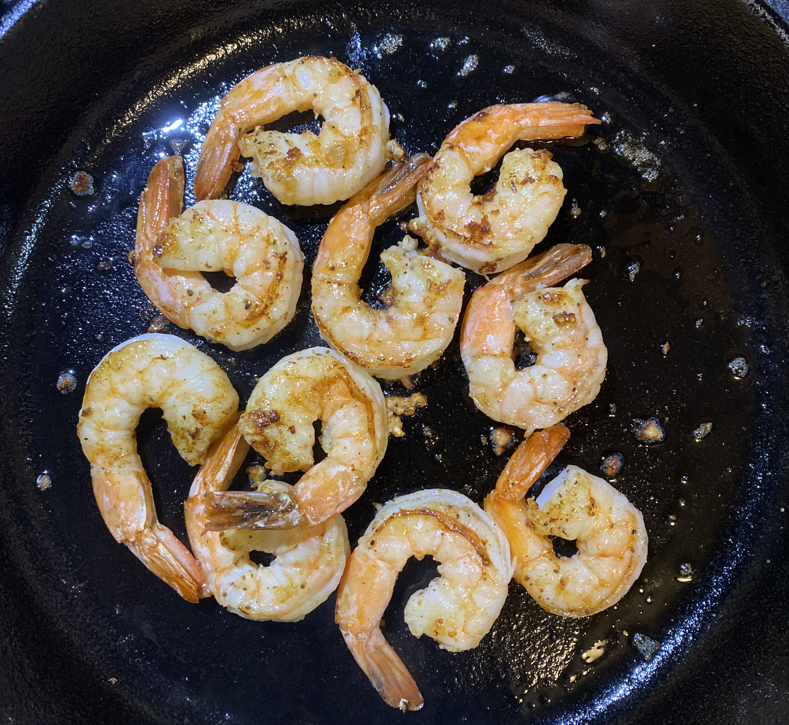

Grilled Garlic Butter Shrimp

Ingredients
- 8-12 shrimps
- Butter
- 1 clove of garlic
NOTE: Season shrimps w/ salt, pepper, garlic powder and old bay before starting step-by-step
Step-by-step instructions
- Wait until skillet gets hot, then cover it with butter
- Put shrimps on skillet
- Put some butter on the middle of skillet again, then put crushed garlic onto it then mix it with shrimps
- Cook until golden color on both sides, then enjoy!